Copernicus Land Data Store - Public Consultation Report
Copernicus Land Monitoring Service
Cloud migration factors, Geospatial data consumption preferences, Data access mechanisms harmonisation, Cloud processing environment barriers, Scalable processing resources, Copernicus data findability, FAIR principles implementation, Data product understanding difficulty, Container orchestration services, European data fragmentation
Contact:
European Environment Agency (EEA)
Kongens Nytorv 6
1050 Copenhagen K
Denmark
https://land.copernicus.eu/
1 Introduction
This report summarises the outcomes of the CLDS consultation survey launched on October 01, 2023. In addition to standard single/multiple choice questions and tables, the survey also offered several options for open replies and the possibility to interact further with CLMS by email. This was done to increase the possibility for interaction and to inquire about aspects respondents might consider relevant but were not covered by the questions.
The goal of the survey was to better understand working practices in the field of geospatial applications. In particular, we were interested to understand limiting factors that inhibit (or block) users from working on the cloud. The underlaying assumption is that an eventual migration to a cloud environment depends on several factors, which can be grouped into two key forces, and which the survey tries to assess specifically:
intensity of the need (e.g., the lack of non-cloud-based infrastructure to cope with given data volumes and processing needs) against
intensity of concerns and difficulties standing in the way of such migration.
Only when the needs outweigh the concerns and difficulties will a user consider migrating to the cloud. Finally, there is a third force worth mentioning - curiosity - which can introduce a certain unpredictability into the otherwise predictable equation of the first two. The flexibility to scale computing and storage resources as needed is considered as one important advantage of a cloud environment. Equally important is the data pool a cloud environment makes accessible.
It shall be noted that the relatively low number of respondents (25) suggests a certain level of caution when interpreting results. Given the limited sample size, the statistical significance of the figures may be constrained. Still, the replies reflect specific and common trends which overlap with key messages in the CLDS1 published in September 2023. Note that not all survey questions are presented in this report. In some cases, the low number of responses makes interpretation too difficult, and thus they were omitted. In other cases, the information is not sufficiently relevant for this report, and these too were omitted.
The survey was structured in three main sections:
General user background assessment - [7 questions]
Specific questions I: Data producers (commercial, public, research) – [19 questions]
Specific questions II: Data consumers – [16 questions]
2 General user background assessment
The first part of the survey aimed to collect users’ background information, allowing for a better categorisation of their replies. Based on the user category (Figure 1), users were forwarded either to section 2 or to section 3.
2.1 Which category describes best your current professional activity?
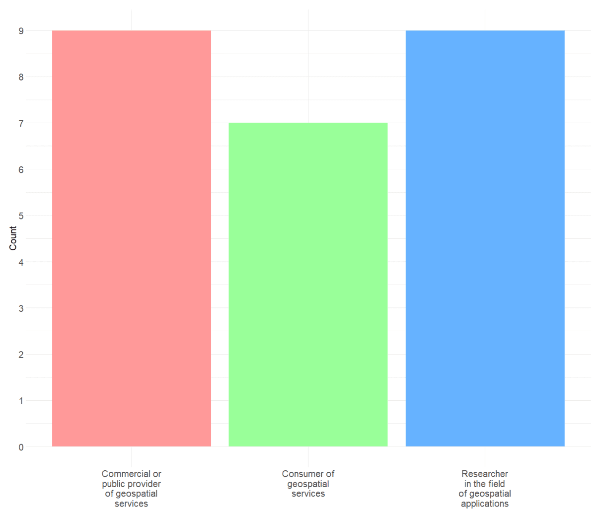
In total 25 respondents were registered, and classified according to:
Commercial or public provider of geospatial services. [9 responses]
Consumer of geospatial services. [7 responses]
Researcher in the field of geospatial applications. [9 responses]
2.2 How would you rate your technical skills in the field of geospatial applications?
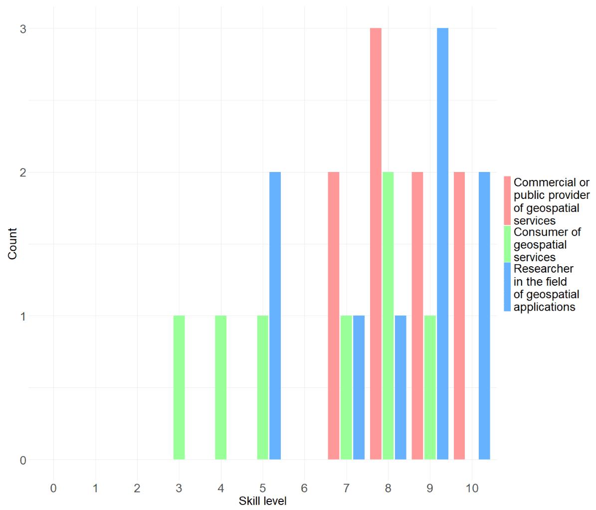
Figure 2 - ‘How would you rate your technical skills in the field of geospatial applications?’
The aim of this question was to apply a stratification depending on the level of expertise of respondents. As expected, commercial and public data providers (red) as well as researchers (blue) show a similarly high level of technical expertise. Data consumers (green) show a broader range and relatively to the other categories a slightly lower scoring. It might be worth noting that 4 out of 7 consumers still score relatively high (7 and more).
2.3 How do you normally work with geodata?
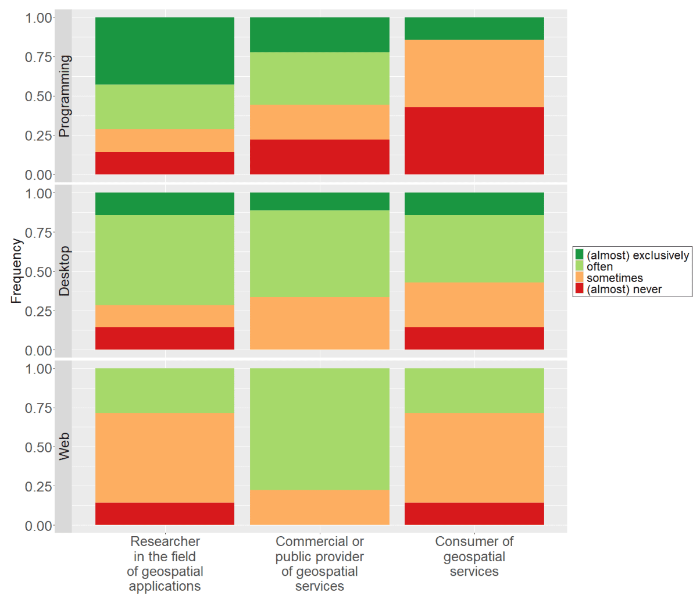
Figure 3 - ‘How do you normally work with geodata?’
Researchers:
- Prefer a ‘Coding/Programming’ or also a ‘Graphical Desktop’ solution for working.
Commercial or public Data Providers:
- Do use all three working types ‘Coding/Programming’, ‘Graphical Desktop’ as well as ‘(interactive) web-based’ solutions.
Consumers:
- Are only exceptionally programmers, and mainly working with Desktop solution (GIS). For consumers of geospatial information, the skill level remains surprisingly high.
Web-based interactive maps seem to be the least used mean of interacting with geospatial data.
3 Specific questions
3.1 What is the data amount you are usually dealing with?
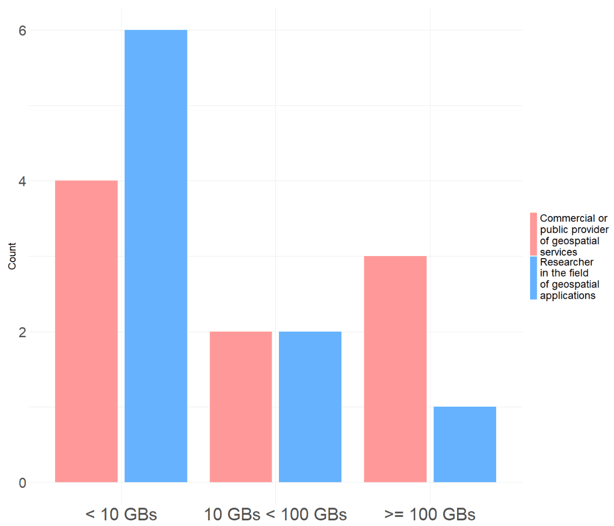
Since data consumers usually are not in the situation of handling data, this question was asked to data producers only. As it can be seen in Figure 4, there are three different size classes:
‘Less than 10GBs’,
‘More than 10 and up to 100 GBs’,
‘More than 100GBs’.
This question was meant to assess a key factor relevant for the freedom of choosing a processing solution. The smaller data volumes a user is confronted with, the less pressure there is on users to opt for a scalable and managed storage and production environment.
The first category is defined for small-scale applications, and regarding hardware constraints easily executable on any desktop computer. The second category represents an average-sized setup, requiring a dedicated system that may not necessarily be scalable. The third category is tailored for large-scale projects, where transitioning to the cloud becomes a sensible choice. Initially, there was a ‘below 1 GB’ category, but it was subsequently merged with the ‘below 10 GB’ class for greater clarity and simplicity.
There is a relatively high share of small-scale projects (10 out of 18 projects are < 10GBs). Such small-scale projects typically do not have demands on scalable processing and storage resources. Besides the hardware aspect, the access to a vast data pool present on the cloud might still be of great interest for such projects.
While researchers clearly tend to work with smaller data volumes, commercial and public data providers show a much broader range. A reason for that could be, that 1) researchers are working on a lower spatial resolution, and 2) operational high resolution wall-to-wall mapping of large areas is not so common.
3.2 ‘Where is your data mostly stored?’
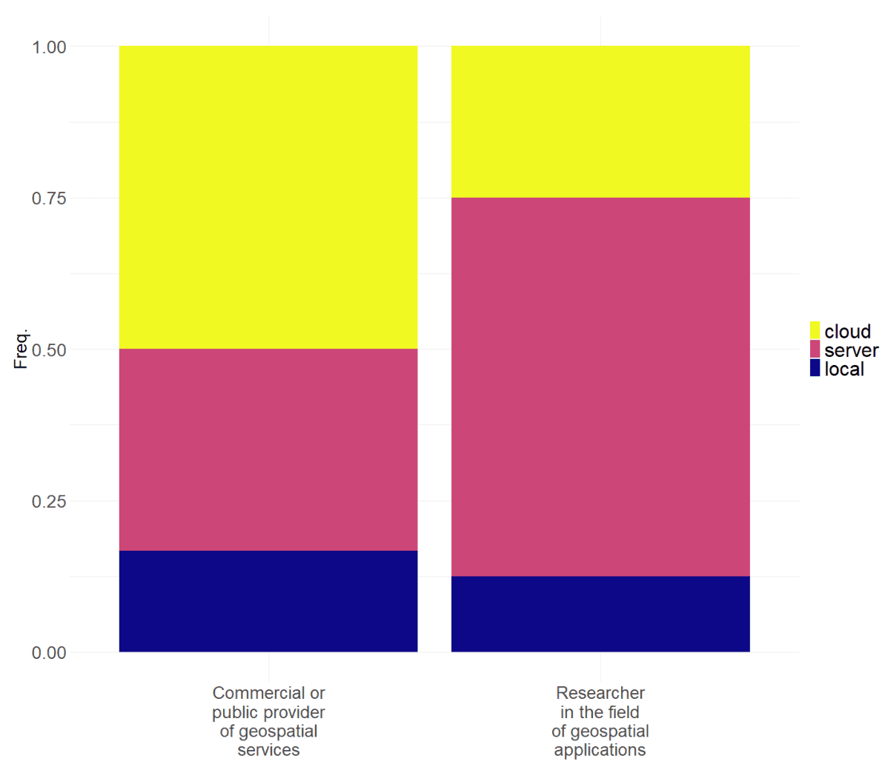
Respondents could choose between:
‘local’, i.e., a workstation,
‘server’ i.e., a dedicated self-managed data server, and
‘cloud’, i.e., a cloud-based storage service.
Only 12-15% of data producers are working on a local standalone machine. Conversely, almost 90% of the respondents have some sort of data pool they are accessing remotely. 50% of the public and commercial data providers do make use of a cloud service for storing data. Which seems to be plausible due to the larger data amounts, and the need to expose the services to their customers. More than 60% of researchers mostly use a self-managed infrastructure.
3.3 In recent times, let’s say in the past year, have you been working in a cloud processing environment?
This question aims to understand the frequency with which data producers work in cloud environments. It is expected that the frequency coincides also with the level of acquaintance of users to work in a cloud environment.
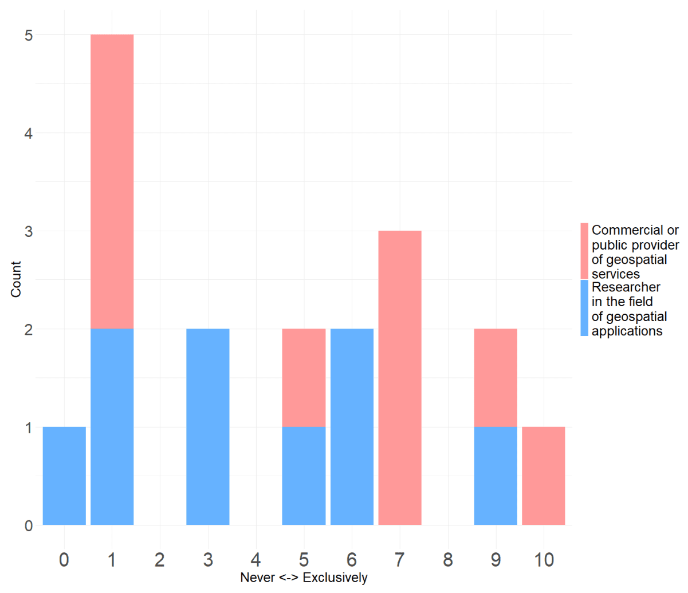
At least occasionally, most users seem to have recently worked in the cloud.
7 out of 17 almost never - rarely (0-3)
7 out of 17 regularly (4-7)
3 out of 17 almost exclusively (8-10)
3.4 What is the scale you are usually working on?
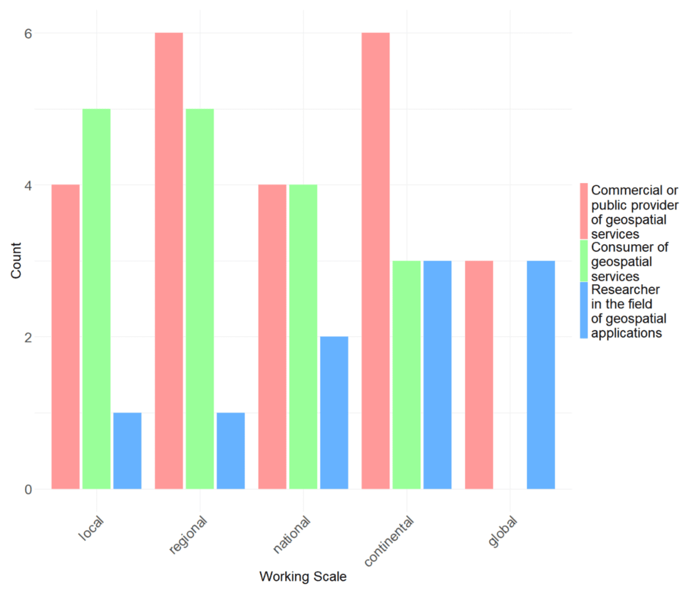
As it can be seen researchers do tendentially work more at continental and global scale. Taking into account also the data volumes (Figure 4), it is likely that they are working with lower resolution data.
Commercial and public data providers are more present on local to continental scales. Interestingly, there is a strong overall in the distribution of commercial and public data producers with data users. Eventually, this could be interpreted as an indicator of good match between user demands and data offer.
3.5 Generally, do you find yourself in the situation where you would like to have more data/products at your disposal?
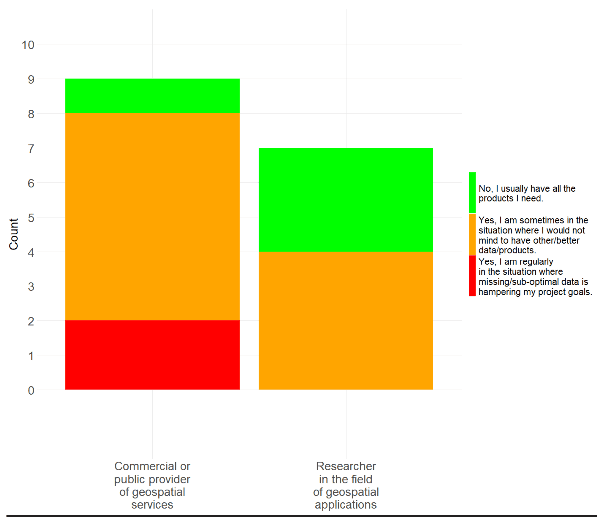
This question aims at assessing the availability of EO data and derived products, and how often and how strong a gap in the data offer impactsthe implementation of a project/product/service. The question was only asked to data producers and researchers, but retrospectively it probably should have been also asked to data consumers.
What can be said is that the lack of data/products seems to be a major issue.
Researchers seem to have somewhat fewer and minor issues, but with only 3 out of 7 cases, having no problems with the data situation, does not seem to be an optimal situation either.
3.6 How easy/difficult it is to…
The next two sets of questions are aiming at understanding the difficulties data producers/ data consumers are encountering in the process of implementing a geospatial project / using a geospatial product. To better address important points, each group was asked a slightly different set of questions.
3.6.1 Commercial/public data producers and researchers - Think about new products that you wish to include in your processes. How difficult/problematic is…
This question was asked to commercial/public data producers as well as to researchers and assesses the respondents experience in the process of setting up and implementing a data production project. The following key activities of a potential product generation workflow were included:
Finding a potentially useful dataset
Understanding a potentially useful dataset
Bringing the new dataset to your processing environment
Pre-processing the new dataset to make it usable for your processes.
Handling large scale processes
Processing costs
Publish
Respondents had to rate each of these questions with one of the following options:
no problem
somewhat difficult
difficult
very difficult (I regularly don’t use a product for that reason)
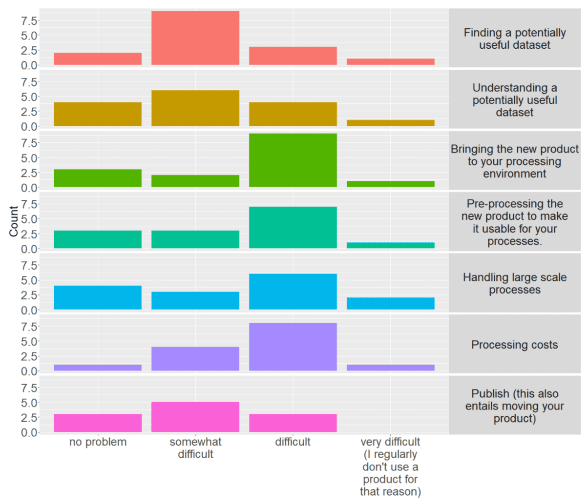
It is clearly visible that most votes are ‘somewhat difficult’ and ‘difficult’, showing overall a considerable level of difficulty. Question one and two, finding and understanding a potentially product score mostly ‘somewhat difficult’. While this is better than others, it remains a considerable friction in the user’s workflow.
Questions three to six focus on the preparatory steps and cloud processing activities, i.e., elements that a cloud service should aim to make as simple and efficient as possible. Overall, they seem to be the most problematic part of the overall workflow. This is also confirmed by the free text questions (Section 4).
Product publication seems to be somewhat less. It could be assumed that publication is often not a mandatory step, or that it can be done by simple means, such as a pdf report, or a download link, and whenever more complex data publication activities are involved, the needed expertise is available.
3.6.2 Data Consumers - How easy is it …
In analogy with 3.6.1, these questions were asked to data consumers with the scope of understanding the respondents experience in the process of using a geospatial product. These are the following key activities of a potential data search and use:
How easy do you think is…:
Discovering new geospatial data?
Finding the geospatial data you are looking for?
Understanding the potential usage of a data product?
Using on-line applications to interact with spatial data?Respondents had to rate each of these questions with one of the following:
Straight-forward
Rather easy
Rather hard
Very hard
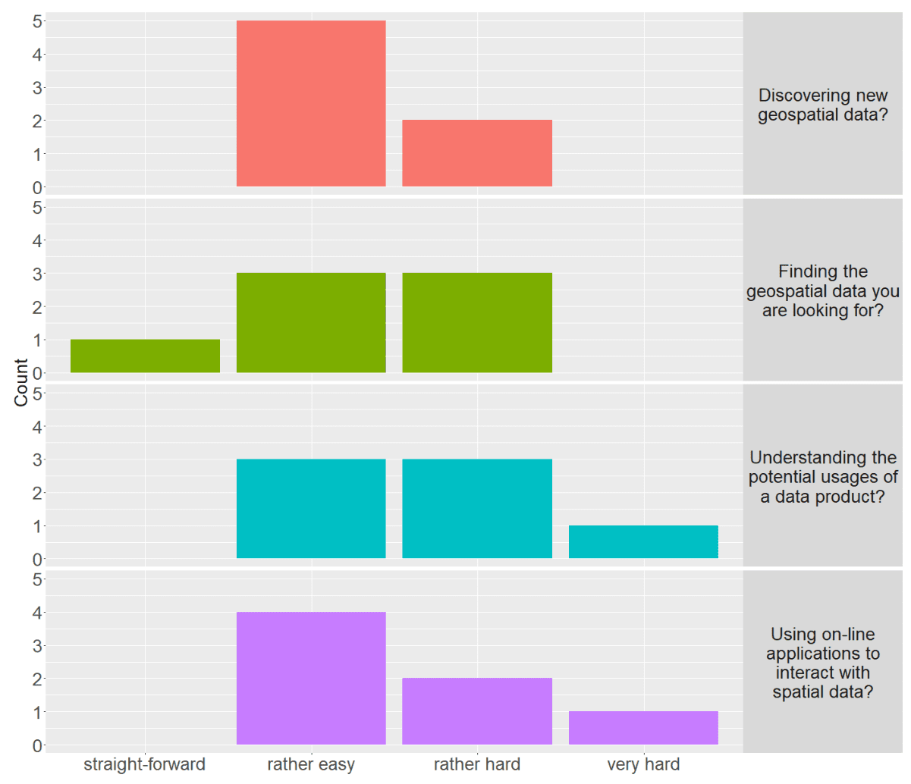
Overall, most replies score ‘rather easy’ but there is also a high occurrence of ‘rather hard’. These results indicate a certain level of difficulties on the customer’s side. To generate considerable uptake dynamics the (public and commercial) geospatial service providers must ensure these points score almost exclusively ‘straight-forward’.
3.7 Please rank the following ways of consuming geospatial data according to your preference and regular use
The following questions aims at assessing how consumers preferably use geospatial information. Respondents had to rank the following options:
Online, by means of a catalogue to discover and find data.
Online, by means of map viewers where I can combine layers.
Offline, after downloading ad-hoc spatial data.
Offline, after downloading statistics as Excel, CSV, PDF files…
Online, by means of dashboards including pre-processed data.
The plot shows an aggregated evaluation of the results, where, for each rank position different score is given, i.e., first position got 5 points, second position got 4,…, until the fifth one, which got 1 point. Summing up the points for each question resulted in the following bar plot, giving an idea of consumers preferences.
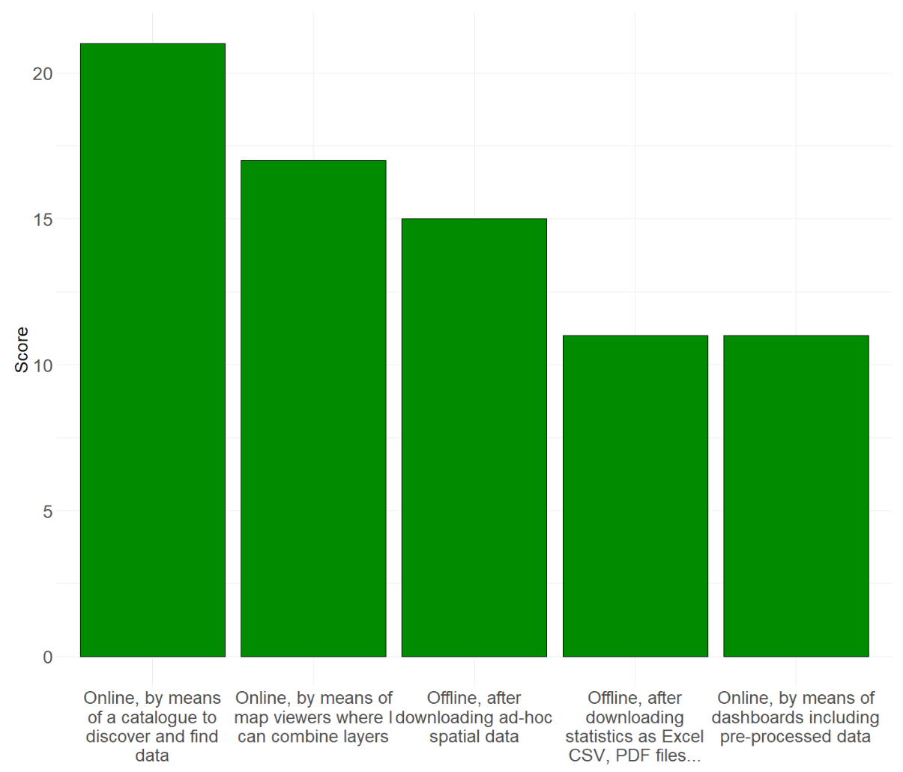
4 Free text replies
Besides the choice-based replies, the survey also contained several questions with the reply in a free text form. This was a particularly precious element of the survey, as respondents could express concerns and proposals which could not have been captured otherwise.
Before the free text reply respondents were asked: ‘In recent times, let’s say in the past year, have you been working in a cloud processing environment?’ (see 3.3)
Followed by the free text question: ‘If the above question scores lower than you would like: why didn’t you work more intensively in a cloud processing environment?’
And then a second one: ‘What are possible improvements you are currently missing in most cloud-based storage and/or processing solutions?’
4.1 Respondent 1
Respondents background:
Commercial or public provider of geospatial services
Very high technical skills in the field of geodata
Mostly working with scripting/programming
Projects typically between 10 and 100 GB
Working on a wide range of scales (local; regional; continental; global)
Hosting data on a company/institution managed server
[Not used to work in a cloud environment!]{.underline}
Question: “Why didn’t you work more intensively in a cloud processing environment?”
Answer: “Accessibility and preparation of the various required input data is not straight forward on a cloud system. Moving from one’s own system to a cloud processing environment requires too much effort to be considered for any developments or tests. Considering the long-term usage of a processing environment - which is usually desired when a full processing chain has been developed and is set up - the costs for using a cloud processing system are much higher than building a processing system on one’s own server. Further, the resources on a cloud cannot be reused, but a user must pay each time when the resources are needed. Maintenance efforts on a cloud system are out of a user’s control and can have a major impact on the processing environment or the timing of one’s own work.”
This respondent does not seem to deal with very large data scales. On hardware side such scale is still very well manageable on a local workstation. This means that there is no strong pushfactor for moving the production to a cloud environment. Apparently, there are no sufficient pull-factors on the respondents, i.e., convincing arguments, for moving to the cloud. Main issues highlighted by the respondent are:
significant effort required for migration,
higher long-term costs compared to a self-built server,
lack of resource reusability, and
concerns about lack of control over maintenance efforts that could impact their work.
Question: “What are possible improvements you are currently missing in most cloud-based storage and/or processing solutions?”
Answer: “Direct access to data provided by the main international EO data providers, including Copernicus, ESA, EUMETSAT, NASA, NOAA, JAXA, etc.“
The proposed improvements are clearly highlighting the importance of the data pool, a key advantage of a cloud environment. The respondent also highlights how important a seamless/direct access to data is despite where it is stored.
Indeed, the fragmentation of European data is remarkable. On the other hand, one unique cloud solution does not seem to be realistic either. The focus must rely on seamless access mechanisms and interoperability which includes processing capabilities across the cloud infrastructures.
Federation, system integration, open standards, seem to be the keywords for addressing the problem.
4.2 Respondent 2
Respondents background:
Researcher in the field of geospatial applications
High technical skills in the field of geodata
Mostly working with Desktop GIS/image processing software.
Projects typically below 10 GB
Working usually on at continental scale
Hosting data on a company managed server
[Not used to work in a cloud environment!]{.underline}
Question: “Why didn’t you work more intensively in a cloud processing environment?”
Answer: “Not used to it, often lack of knowledge about how to process.”
This respondent primarily deals with minimal data volumes, resulting in limited hardware and productivity tool requirements for handling extensive files, both in terms of quantity and size. As a result, there is a minimal impetus for this user to transition to the cloud, particularly when viewed through the lens of hardware demands and tool compatibility.
Question: “What are possible improvements you are currently missing in most cloud-based storage and/or processing solutions?”
Answer: “Make the use easy with processes to download data pre-configurated and well explained ad-hoc options with examples.”
This respondent shows some level of interest to work in the cloud. The lack of knowledge on how to work on the cloud seems to be the key problem. This respondent clearly points out the need for guidance and training, as well as the provision of simple and user-friendly solutions that can help to overcome the initial difficulties.
It is probably safe to say that a key obstacle for a user starting to work in a cloud environment is the difficulty of learning how to work in the cloud. It cannot be emphasised enough how important it is to support users in learning how to work in the cloud.
Asked about “…why didn’t you work more intensively in a cloud processing environment?”, the majority of the free-text replies point to the same note:
“I haven’t had the training to learn how to use it”
“cost, competence and personal resources”
“not specifically needed, not very friendly environments”
“no time”
And: “What are possible improvements you are currently missing in most cloud-based storage and/or processing solutions?”
“Improvement of general System security”
“Clearer guidelines, user-friendly environments”
4.3 Respondent 3
Respondents background:
Commercial or public provider of geospatial services
Very high technical skills in the field of geodata
Using all possible solution for working with geodata.
Projects typically above 100 GBs
Working usually on at continental and global scales
Hosting data in cloud
Very much used to work in cloud environments!
Question: “Why didn’t you work more intensively in a cloud processing environment?”
Answer: “At the moment we lack the possibilities for subscription of consume based services, hour or capacity-usage based pricing models on European Copernicus Cloud Providers, such as WEkEO. A more dynamic price model and advanced Container Orchestration services (e.g. Kubernetes as a Service) would provide us the possibility to increase our efficiency and would enable us to provide more cost-effective products. In addition, a more stable and robust European cloud environment would be highly appreciated and would lead to shorter production times, leading to lower productions costs.”
This respondent is a data provider, used to handle large data amounts and very much used to work in the cloud.
The data volumes and services this respondent is used to work with, likely offersfew alternatives and necessitating the use of a cloud-based solution. At some point this respondent took the decision of learning how to work in the cloud and migrating the workflowsthere. While the level of satisfaction of migrating to the cloud is not disclosed, with this step the respondent had to accept a higher degree of dependency to the quality and the competitivity of a cloud-based services.
Question: “What are possible improvements you are currently missing in most cloud-based storage and/or processing solutions?”
Answer: “To provide cost efficient product for our customers we heavily rely on European cloudenvironments in the domain of public domains, such as the Copernicus Programme.”
This experienced cloud users ask for more competitivity in the current cloud offers, the proposed improvements are pointing at:
More dynamic pricing models (e.g., capacity-usage based) and at the technological layer important for the production process (process scalability, e.g., Kubernetes).
Such improvements would allow to offer more effective services (reduction of cost and production time), and thus ultimately to the benefit of the users, and strengthening the competitivity of the European market.
4.4 Respondent 4
Respondents background:
Researcher in the field of geospatial applications
Very high technical skills in the field of geodata
Mostly working with scripting/programming and desktop solutions
Projects typically between 10 and 100 GB
Working on a wide range of scales (local; regional; national; continental)
Hosting data on a company/institution managed server
Used to work in cloud environments!
Question: “Why didn’t you work more intensively in a cloud processing environment?”
Answer: “I wish that the EU and EC increased cooperation with NASA and really used NASA’s experience in data sharing and processing. Instead of tens of different data portals and gateways just use one properly that keeps all the data in the same structure like LP DAAC. And also provides a user with useful tools e.g.: https://appeears.earthdatacloud.nasa.gov/
Using Copernicus data is difficult because there is chaos, they are not consistent across, and formats are not very user-friendly. Why ASF (https://asf.alaska.edu/) can better provide (and process) S1 data than Copernicus and EC?”
Very experienced in geoscience, used to manage medium size data volumes and used to work in the cloud.
The respondent seems to be interested and capable of working in a cloud environment. The main issue seems to be in the heterogeneity and inconsistency of European data provision landscape. The respondent indirectly also highlights the importance of the data pool, which besides and independently from the availability of scalable processing resources can be considered a further good reason (pull factor) for migrating to the cloud.
The proposed improvements are clearly pointing at ‘fewer but better’ services related to data provision and processing capabilities.
5 Conclusions
The survey was set up to better understand the working practices of the geodata community. Emphasis was given to cloud based working practices – how much experts rely on cloud-based solutions in their day-to-day applications, and especially to understand what shall be improved to make cloud environments more attractive.
The low number of respondents must be considered when assessing the results. The survey queried data producers (science, commercial, and public) and data users/consumers separately (Figure 1) and despite the expected uncertainties, the most important patterns seem to be well captured.
Although most experts do not appear to be fundamentally opposed to “working in the cloud”, only a surprisingly small proportion implement it consistently (?@sec-3-3). This is perhaps the most important discrepancy identified in this survey, and understanding and addressing its causes must be at the centre of our attention.
A high proportion of projects are working with relatively small amounts of data (Figure 4) and may therefore have a lower need for scalable cloud solutions. However, as it can be seen from the free text responses (Section 4), the willingness and interest in working in the cloud is clearly noticeable. In view of the large variety of freely available data, the question of why users do not work with large amounts of data may also be justified. Is there simply no need for large data volumes, or are the possibilities for accessing and processing the data inadequate?
It is clear from Figure 9, and even more so from the free text responses in Section 4, that data producers face a variety of difficulties that prevent them from engaging with potential cloud solutions. In summary the main concerns and difficulties are:
Data is distributed across several unintegrated data pools.
Data products and access mechanisms are not consistent.
Stability, reliability, and robustness of cloud production environments.
Migrating to the cloud requires a considerable investment in expertise, and there is a lack of well-conceived user onboarding mechanisms.
Uncompetitive pricing schemes (lack of ‘consumer-based services’)
High costs as compared to self-hosted solution (at least for small to medium scale requirements)
In fact, these ‘concerns and difficulties’ are the most significant obstacles preventing the decision to transition to the cloud. Addressing concerns and difficulties should therefore be put high up in the agenda of good cloud services. This involves offering compelling services and showcasing example workflows that not only persuade users with scalability demands but also resonate with those working with smaller data amounts, encouraging them to embrace the benefits of a cloud environment.
If we look at the existing cloud solutions, we can see that the competition is mainly on the available data pool, the costs (including how costs are allocated) and the functionalities offered by cloud providers. The aim of the CLDS is to remove the data pool from this equation. Users should be free to choose the best fitting cloud services without having to accept a limitation of the available datasets. As outlined in the concept note2, the Copernicus Land Data Store aims to make the CLMS portfolio accessible to as many cloud services as possible. Cloud providers should be able to easily integrate CLMS data into the services.
To improve findability and accessibility of CLMS data, the CLDS will also build on the FAIR3 principles. Together with the FAIR principles the CLDS will ensure product documentation and CLMS related articles can be harvested by chatbots helping users to enquire CLMS product usability and technical details. These measures shall help to reduce the difficulties users encounter on their journey to work with CLMS data (see Section 3.5, Section 3.6.1, Section 3.6.2).
In conclusion, we can produce a few main recommendations that should be taken up by cloud services and data stakeholders:
Expose data using open and state of the art solutions. This includes proper data format and access mechanisms.
Ensure good connectivity to and from the data pool.
Harmonise data access methods, allowing users to rely on one single access solutions connecting to all data pools.
Invest in user uptake:
Pre-configured well documented practical examples
Trainings and webinars
Helpdesk
Enable competitive pricing schemes and infrastructure services.
Cloud services shall see their value in, and prioritize accordingly:
Scalable processing and storage resources
Availability and efficient accessibility to large data pools
Effective, competitive, and reliable production environment